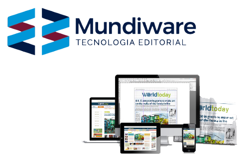

Experiência
MundiWare
Tive o prazer de trabalhar por 8 meses na empresa MundiWare, onde fui muito bem acolhido e tive a assistência necessária para crescer profissionalmente. A MundiWare é uma empresa especializada no desenvolvimento e suporte de portais de notícia, e minha atuação foi como desenvolvedor front-end. Durante esse período, utilizei ferramentas e linguagens como HTML, CSS, JavaScript e MWTPL (uma linguagem própria da empresa).
Essa experiência foi extremamente enriquecedora, permitindo que eu aprimorasse minhas habilidades na área e adquirisse ampla experiência prática. Além disso, tive a oportunidade de interagir com toda a equipe da empresa, participando de reuniões, colaborando em projetos e contribuindo em diversas atividades.
Acesse o site da empresa aqui:
MundiWare